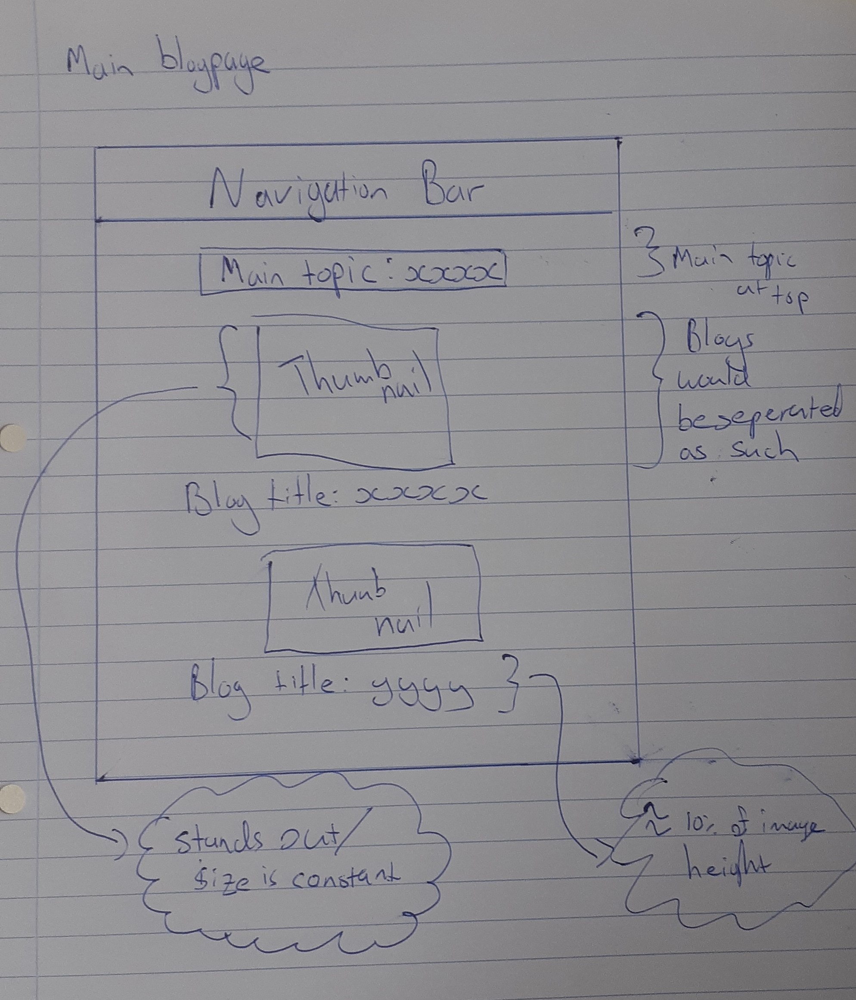
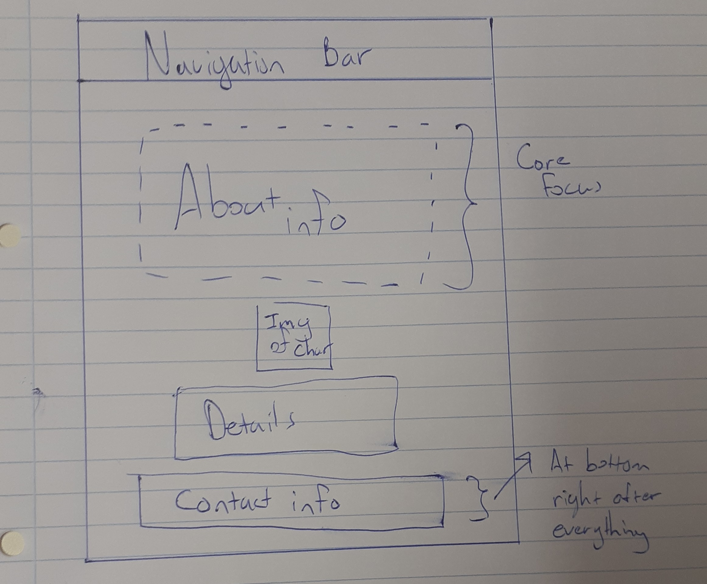
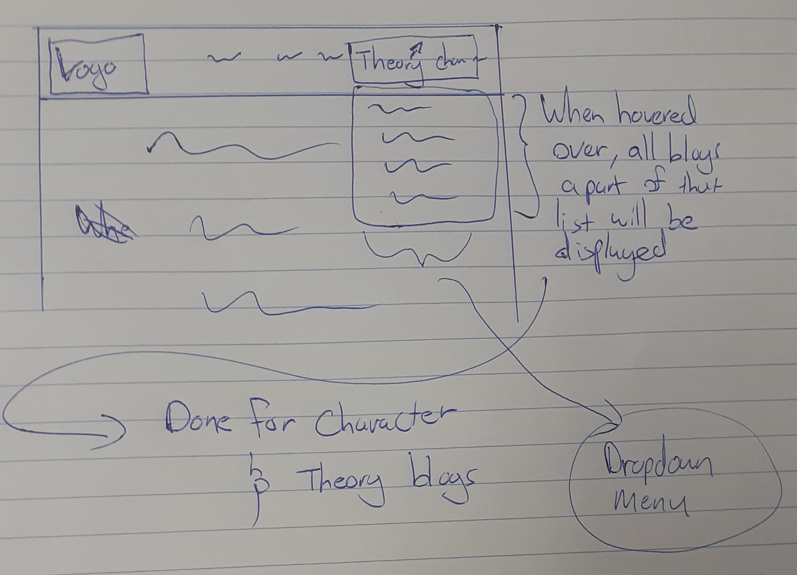
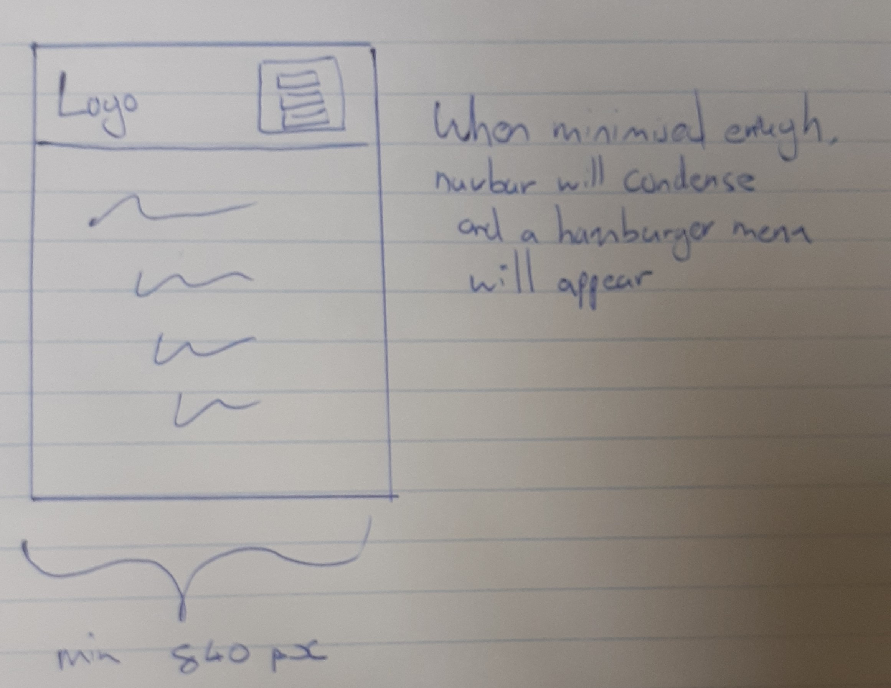
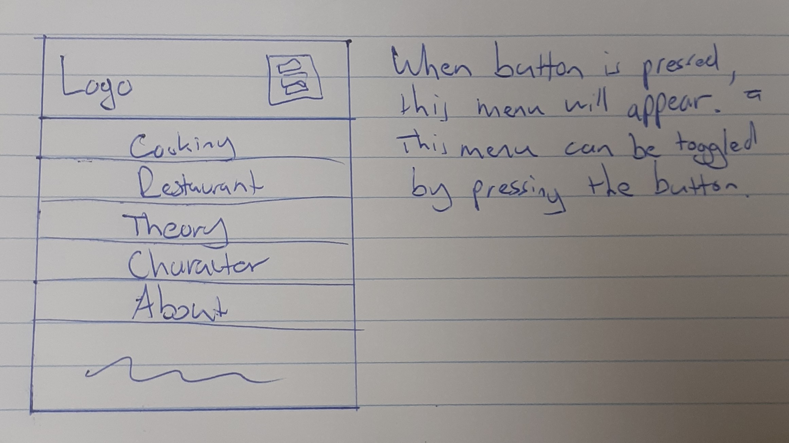

Updated Wireframes!
These wireframes have been updated to show the evolution of the website as time has progressed and different design decisions have been made.
Home Page - Final
Home page has not undergone many significant changes. The biggest change has been the removal of the proposed latest blog with its accompanying thumbnail.
Main Blog Page - Final
The main blog page has been adapted to rather contain only the blogs that are associated with the core topic of that section. These are namely Theory blogs, Cooking, Restaurants, Character Blogs (related to design and creativity).
Actual Blog Page - Final
For the actual blogs, it has remained mostly the same, but the buttons at the bottom that would take you to other blogs have been removed.
About/Contact information - Final
The about page has been condensed to match the same styling as that of the general blogs.
Navigation Bar
The navigation bar now contains all the core tabs with character blogs and theory blogs containing a drop down with all its blogs showcased when hovered over.
Mobile Menu
For responsiveness, when the sites window has been resized to a certain width, the navbar will collapse and a hamburger menu button will be available. Only the logo and the hamburger menu will be visible at this point.
If the button is pressed, the menu will open and all the previous options from the navbar will be made visible and selectable by the user.
